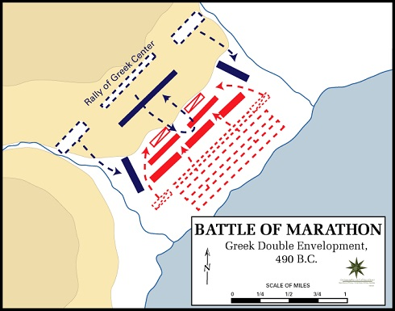
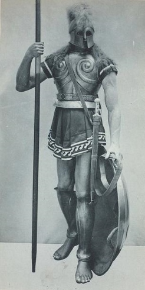

Wonky Mind
30, Nov 2013:
Tank Man

Tank Man, or the Unknown Protester, is the nickname of an anonymous man who stood in front of a column of tanks on June 5, 1989, the morning after the Chinese military had suppressed the Tiananmen Square protests of 1989 by force. The man achieved widespread international recognition due to the videotape and photographs taken of the incident. Some have identified the man as Wang Weilin, but the name has not been confirmed and little is known about him or of his fate after the confrontation that day. This image became an iconic symbol of nonviolence across the world.
The incident took place near Tiananmen on Chang'an Avenue, which runs east-west along the south end of the Forbidden City in Beijing, on June 5, 1989, one day after the Chinese government's violent crackdown on the Tiananmen protests. The man stood in the middle of the wide avenue, directly in the path of a column of approaching Type 59 tanks. He held two shopping bags, one in each hand.[4] As the tanks came to a stop, the man gestured towards the tanks with his bags. In response, the lead tank attempted to drive around the man, but the man repeatedly stepped into the path of the tank in a show of nonviolent action.[5] After repeatedly attempting to go around rather than crush the man, the lead tank stopped its engines, and the armored vehicles behind it seemed to follow suit. There was a short pause with the man and the tanks having reached a quiet, still impasse.
Having successfully brought the column to a halt, the man climbed onto the hull of the buttoned-up lead tank and, after briefly stopping at the driver's hatch, appeared in video footage of the incident to call into various ports in the tank's turret. He then climbed atop the turret and seemed to have a short conversation with a crew member at the gunner's hatch. After ending the conversation, the man descended from the tank. The tank commander briefly emerged from his hatch, and the tanks restarted their engines, ready to continue on. At that point, the man, who was still standing within a meter or two from the side of the lead tank, leapt in front of the vehicle once again and quickly reestablished the man–tank standoff.
Video footage shows that two figures in blue attire then pulled the man away and disappeared with him into a nearby crowd; the tanks continued on their way.[5] Eyewitnesses disagree with each other about the identity of the people who pulled him aside. Charlie Cole (there for Newsweek) believes it was the PSB (Public Security Bureau) that pulled him away,[6] while Jan Wong (there for The Globe and Mail) believes that the men who pulled him away were only concerned local civilians. In April 1998, Time included the "Unknown Rebel" in a feature titled Time 100: The Most Important People of the Century.
More Info: Tank Man (Wiki Link)17, Nov 2013:
Battle of Marathon

Battle was Marathon was during the first Persian invasion of Greece, fought between the Athenians, aided by Plataea and the Persian force commanded under King Darius 1. The Persian invasion was a direct response to the Greek involvement in the Ionian Revolt, and was culminated by King Darius 1 to subjugate Greece. It is said that, battle of Thermopylae is a plot by King Darius 1's son to avenge the Persian's defeat in Marathon.
The Greeks could not hope to face the superior Persian cavalry; however, when learning that the Persian cavalry was temporarily absent from the camp, Miltiades ordered a general attack against the Persians. He reinforced his flanks, luring the Persians' best fighters into his centre. The inward wheeling flanks enveloped the Persians, routing them. The Persian army broke in panic towards their ships, and large numbers were slaughtered. The defeat at Marathon marked the end of the first Persian invasion of Greece, and the Persian force retreated to Asia. Darius then began raising a huge new army with which he meant to completely subjugate Greece; however, in 486 BC, his Egyptian subjects revolted, indefinitely postponing any Greek expedition. After Darius died, his son Xerxes I restarted the preparations for a second invasion of Greece, which finally began in 480 BC.
IMPORTANCE: The Greeks won the battle decisively and it showed the Greeks that the Persians could be defeated. Since the following two hundred years saw the rise of the Classical Greek civilization, which has been enduringly influential in western society, the Battle of Marathon is often seen as a pivotal moment in European history. It is now perhaps famous as the inspiration for the Marathon race. Although thought to be historically inaccurate, the legend of the Greek messenger Pheidippides running to Athens with news of the victory became the inspiration for this athletic event, introduced at the 1896 Athens Olympics, and originally run between Marathon and Athens (an approx. distance of 42 Kms).
More Info: Battle of Marathon (Wiki Link)16, Nov 2013:
Hoplite

Hoplites were soldier citizens of ancient Greek city-states. They were from mostly propertied farmers or artisans who were able to afford the bronze armour suit and weapons. Hoplites generally received elite military training. In Sparta however, the culture was built around the military where all male citizens are sent to military school where they are trained to be hoplites and served their entire life in the army. Hoplites are usually considered as heavy infantry men in the Greek army. The Spartan army adopted the military innovation known as the phalanx formation, which is mostly used by the hoplites during battles. It proved to be very effective in the Greco-Persian wars of battle of Marathon, battle of Plataea and battle of Thermopylae. When the Persian army faced the Spartan's in the battle of Thermopyle, the first two days were a massacre. It was evidently clear that the Persians were not good enough to fight against a hoplite army, even the infamous immortals. Their bows and spears couldn't penetrate the hoplite armour.
Hoplites armour and weapons were usually fully made of bronze, weighing nearly 32 kgs. They generally wore a helmet, a chest plate and used a long spear and also had a small sword that can be used when the spear is lost or broken. Although the design of the helmet varied with time the first standardised on was the Corinthian helmet and it was a very successful design. The later hoplites also used, Chalcidian helmet, a very simple Pilos helmet and the Thracian helmet. Their helmets were usually decorated with horsehair crests. They wore linen breastplates called linothorax. They carried a large concave shield called hoplons possibly the namesake of the work hoplites. Its made of wood covered with bronze and weighed around 6-7 kgs. Their main weapon was a spear called dory with a curved leaf shaped spearhead and the rear end had a spike, which was 8-15 foot long. The hoplites carried the spear in the right hand and their shield in the left hand. They also had a secondary weapon which was a short sword called xiphos which was generally about 50-60 cm long but the Spartans used blades as short as 30 cm.
More Info: Hoplite (Wiki Link)10, Nov 2013:
Battle of Thermopylae
Considered to be among the most important battles of ancient history, this is the battle where a huge Persian army considered to be the largest ever assembled at that time clashed with the small Greek army led by 300 ferocious Spartan soldiers under the command of Leonidas I. This is the place where the 300 courageous soldiers made their last stand. This battle would also shape the western democracy. The Greeks chose Thermopylae since it gave a huge geographical advantage. It was a narrow creek, where the huge Persian army has to funnel through. This nullified the greatest advantage that the Persian's had in the battle, which is sheers numbers.
The Persian king sent a messenger to negotiate terms, where the Greeks were offered freedom and the title "Friends of the Persian people", and Leonidas refused. The messenger left with the famous words, "Our arrows will block out the sun" for which Leonidas general replies "Then we shall have our battle in the shade". For two days, the Spartans slaughters the Persians, even the infamous Immortals (There were called immortals because they were always 10,000 of them, for any death is immediately replaced). On the Persian king realizing their flaws, mobilizes an army through another pass as informed by a traitor and surrounds the Spartans. And the final war is the last stand of the 300 Spartan's, where they fight and die. It is said as a less known fact that, there were also around a 1000 of the other Greek army that decided to fight and die along side the 300 Spartan's. The Spartan's last stand is depicted in the Hollywood movie "300".
IMPORTANCE: Historians say that the sense of one Greece was born in the pass of Thermopylae. It is this battle where the different states of Sparta and Athens abandoned their differences and fought against their common enemy Persians. It is this battle which ignited a spark of Greece as one nation which was later accomplished by Philip II of Macedon and subsequently carried over by his son Alexander the Great who defeated Persia and helped spread the Greek culture.
More Info: Battle of Thermopylae (Wiki Link)06, Nov 2013:
Fire Balloons - Janapese weapons of WWII

A fire balloon (風船爆弾, fūsen bakudan, lit. "balloon bomb"), or Fu-Go, was a weapon launched by Japan during World War II. A hydrogen balloon with a load varying from a 12-kilogram (26 lb) incendiary to one 15 kg (33 lb) antipersonnel bomb and four 5 kg (11 lb) incendiary devices attached, they were designed as a cheap weapon intended to make use of the jet stream over the Pacific Ocean and wreak havoc on Canadian and American cities, forests, and farmland.
The balloons were relatively ineffective as weapons but were used in one of the few attacks on North America during World War II.
Between November 1944 and April 1945, Japan launched over 9,300 fire balloons. About 300 balloon bombs were found or observed in North America, killing six people and causing a small amount of damage.
Similar, but cruder, balloons were also used by Britain to attack Germany between 1942 and 1944.
More Info: Fire Balloons (Wiki Link)05, Nov 2013:
BSAA Star Dust incident:

Star Dust was a British South American Airways (BSAA) Avro Lancastrian airliner which crashed into Mount Tupungato in the Argentine Andes on 2 August 1947, during a flight from Buenos Aires to Santiago, Chile. A comprehensive search of a wide area (including what is now known to have been the crash site) was fruitless, and the fate of the aircraft and occupants remained unknown for over 50 years. An investigation in 2000 determined the crash was caused by weather-related factors, but until then speculation had included theories of international intrigue, intercorporate sabotage and even abduction by aliens.
In the late 1990s, pieces of wreckage from the missing aircraft began to emerge from the glacial ice. It is now assumed that the crew became confused as to their exact location while flying at high altitudes through the (then poorly understood) jet stream. Mistakenly believing they had already cleared the mountain tops, they started their descent when they were in fact still behind cloud-covered peaks, and Star Dust crashed into Mount Tupungato, killing all aboard and burying itself in snow and ice.
The last word in Star Dust's final Morse code transmission to Santiago airport, "STENDEC", was received by the airport control tower four minutes prior to its planned landing and repeated twice; it has never been satisfactorily explained.
More Info: BSAA Star Dust incident (Wiki Link)
Burke & Hare Murder Dolls:

Just a few years after the “Anatomy Murderers” Burke and Hare were apprehended in Edinburgh, two boys discovered these tiny dolls, each nested into a miniature coffin hidden away in the city park.
At first theories on the dolls' significance ranged from witchcraft to child’s toys, but eventually it began to seem that the 17 tiny figures could be effigies for the 17 murder victims a decade earlier.
Between 1827-1828 William Burke and William Hare lured in and murdered their lodgers in a scheme to provide fresh bodies to the local anatomy school. Dr. Robert Knox, a brilliant and well-known local anatomy lecturer, purchased the bodies and most likely knew that something was a bit suspicious about his supply chain.
More Info:Burke & Hare murder dolls
Burke & Hare murders (Wiki Link)
31, Oct 2013:
Jim Thorpe:

He is considered as one of the most versatile athletes of 20th century. He won olympic gold with record timing wearing only shoes that he picked up from garbage that did not fit him well, so he wore extra socks. It is widely regarded that he was discriminated because of his Indian-American ancestry.
More Info: Jim Thorpe (Wiki Link)